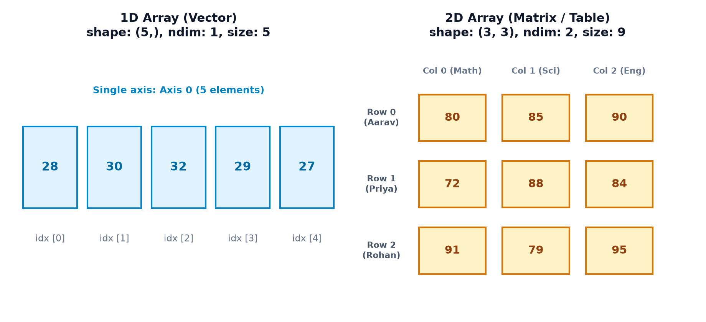
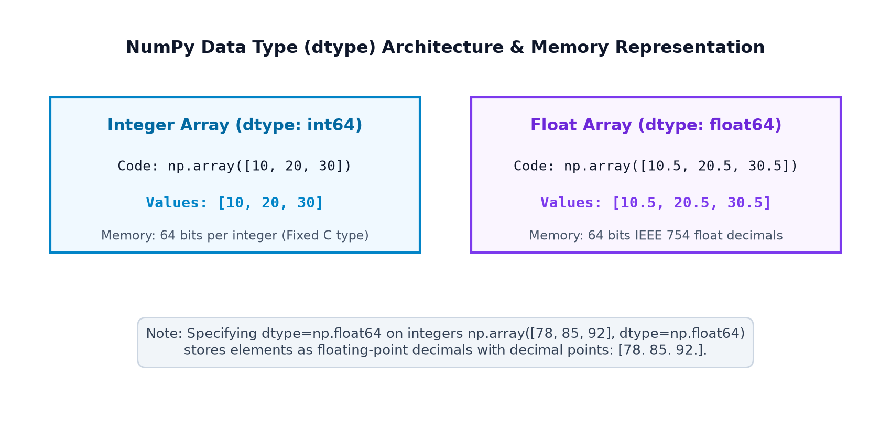
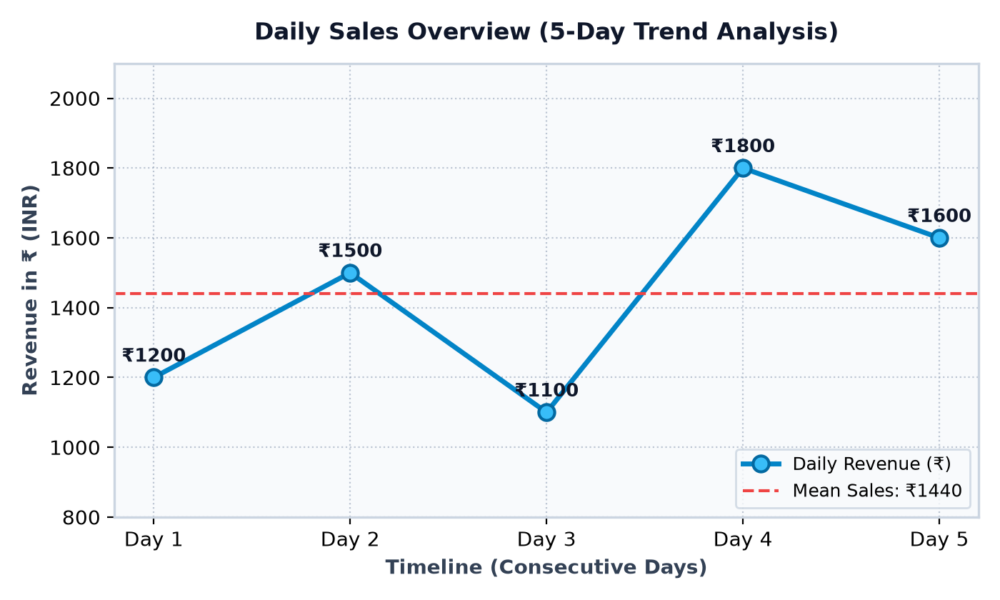
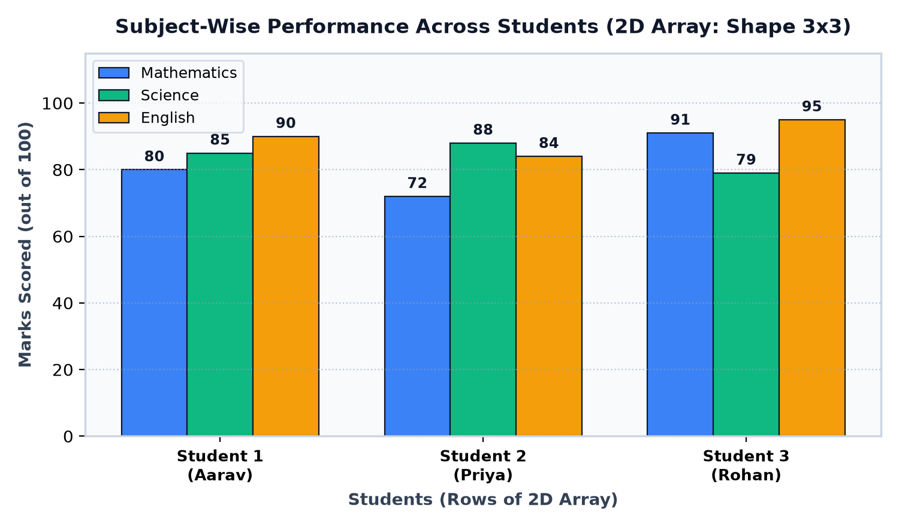
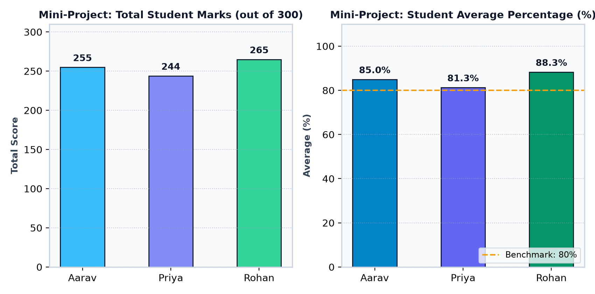

Topic 2 — NumPy Installation and ndarray
Take your first hands-on steps in numerical computing! Master setting up your Python numerical workspace,
installing and verifying NumPy across terminals and notebooks, diagnosing environment and kernel mismatches,
understanding the foundational ndarray architecture, distinguishing ndim, shape,
size, and dtype, exploring data types, and building the Student Marks Array Explorer.
Goals Learning Outcomes
By the end of this lesson, you will be able to confidently explain and execute:
- Installation Mastery: Install NumPy into the intended Python environment using
pip. - Verification: Confirm package installation using
pip showand Python version introspection. - Import Syntax: Correctly import NumPy using the universal
import numpy as npconvention. - Environment Troubleshooting: Solve
ModuleNotFoundError, virtual environment confusion, and Jupyter kernel mismatches. - The
ndarrayConcept: Explain what N-dimensional arrays are and how they represent structured numbers. - Array Creation: Convert Python lists and nested lists into high-performance 1D and 2D arrays.
- 1D vs. 2D Arrays: Recognize vectors versus matrices and explain why 1D vectors have shape
(n,). - Key Attributes: Confidently distinguish
ndim(dimensions),shape(axis lengths),size(element count), anddtype(data type). - Array Generators: Use
np.zeros(),np.ones(), andnp.arange()for synthetic array initialization. - Real-World Representation: Model everyday datasets like student marks, store revenues, and daily temperature curves.
- Data Type Mechanics: Inspect inferred numeric types and explicitly specify types with
dtype=np.float64. - Execution Environments: Run NumPy scripts in standalone terminal scripts, VS Code, and Jupyter Notebooks.
- Visual Array Interpretation: Read and understand array cell diagrams and Matplotlib visualizations.
01 Setting Up Your NumPy Workspace
Imagine a student tasked with analyzing the examination scores of 500 classmates. Before writing a single line of mathematical analysis, they must ensure their workstation is properly configured. To avoid common beginner confusion, it is essential to distinguish five distinct concepts:
- 1. Python: The core programming language runtime engine installed on your computer.
- 2. Python Package / Library: A curated collection of pre-written modules, functions, and C-extensions—such as NumPy.
- 3. Python Environment: An isolated directory containing a specific Python executable and its own private set of installed packages (site-packages).
- 4. Installing a Package: The one-time process of downloading NumPy from PyPI (Python Package Index) and placing its files into the environment.
- 5. Importing a Package: Loading the installed library into an active program's memory at runtime using the
importstatement.
Python 3.10+ runtime
Active interpreter
pip install numpyOne-time download
import numpy as npLoad in script
np.array([..])Contiguous ndarray
mean(), sum(), max()Actionable metrics
# Universal industry-standard import convention
import numpy as np
print("NumPy is ready!")Code Explanation: import numpy tells Python to load the NumPy library into memory. The suffix as np creates a shorthand alias. Writing np.mean() is far more ergonomic than writing numpy.mean() hundreds of times.
import numpy as np
# The __version__ attribute reports the exact build version
print("NumPy version:", np.__version__)Why might version numbers vary? Different environments and operating systems receive updates at different times. A modern release such as NumPy 2.x introduces streamlined APIs and enhanced performance, but all foundational array mechanics taught in this course apply universally across versions 1.2x and 2.x.
02 Installing NumPy Step by Step
Installation is performed using pip (the standard Python package installer).
Depending on your preferred operating system and developer workflow, select the appropriate method below:
A. Standard Terminal Installation (Windows / macOS / Linux)
python -m pip install numpyCommand Breakdown:
python: Targets your system's active Python interpreter.-m pip: Executes thepipmodule that belongs directly to that specific Python interpreter (avoiding accidental installation into the wrong Python version).install numpy: Downloads the latest pre-compiled C wheels from PyPI and installs them.
On systems with multiple Python versions installed simultaneously, use the platform-specific prefix:
- macOS / Linux:
python3 -m pip install numpy - Windows Py Launcher:
py -m pip install numpy
B. Installation Inside Jupyter Notebooks
Jupyter notebooks execute within a specific Python kernel. Installing via an external terminal might target a different Python environment. In a notebook cell, use the built-in package management magic command:
%pip install numpyNote: %pip is an IPython magic command specifically designed to guarantee installation into the kernel running the notebook. Do not include the % symbol inside standard .py script files.
C. Installation in VS Code or Modern IDEs
- Press Ctrl+Shift+P (or Cmd+Shift+P on macOS) and choose Python: Select Interpreter.
- Select your preferred environment (e.g.,
Python 3.13 (.venv)). - Open the integrated terminal (Ctrl+`). Notice that VS Code automatically activates your environment.
- Run
python -m pip install numpy.
python -m pip show numpyThis command outputs package metadata including version, summary, author, license, and the exact filesystem folder where NumPy is stored.
import numpy as np
values = np.array([10, 20, 30])
print(values)
print("Sum:", np.sum(values))03 Common Installation Errors & Their Solutions
Encountering an error during installation is a normal part of a developer's journey. Here is a systematic diagnostic guide to resolving common setup hurdles:
ModuleNotFoundError
NumPy missing
sys.executableIdentify environment
python -m pip installInstall in active env
import numpy as npZero errors!
Cause: Python cannot locate NumPy in the site-packages directory of the currently running interpreter.
Solution: Verify which Python executable is running your script, then execute python -m pip install numpy using that specific interpreter.
Cause: The Python installation directory or Scripts folder is missing from your operating system's system PATH.
Solution: Use the Python module flag: python -m pip install numpy or py -m pip install numpy on Windows.
Cause: You installed NumPy in your terminal, but Jupyter Notebook is connected to a different virtual environment kernel.
Solution: Inside a notebook cell, run %pip install numpy, then click Kernel → Restart Kernel.
Cause: Attempting to write into a global system directory without administrative permissions.
Solution: Use the user installation flag: python -m pip install --user numpy, or preferably, use a project virtual environment (python -m venv .venv).
python --version
python -m pip --versionimport sys
import numpy as np
# Pinpoint the exact Python executable running this script
print("Python executable:", sys.executable)
print("NumPy version:", np.__version__)04 What Is an ndarray?
The central object in NumPy is the ndarray (N-Dimensional Array).
An ndarray is a multidimensional container of items of the same type and size.
Think of it through simple everyday analogies:
- 1D Array (Vector): A single row of numbered storage lockers holding student marks:
[78, 85, 92, 67, 88]. - 2D Array (Matrix): A spreadsheet table where each row represents a student and each column represents a subject score.
- 3D Array (Tensor): A stack of transparent spreadsheet tables, such as RGB color channels in a photograph.
Core Structural Concepts
- Elements: The individual numeric values stored inside the array cells.
- Axes: The directions along which the array is organized (Axis 0 = rows, Axis 1 = columns).
- Homogeneous Data: Every element in an ordinary numeric array shares the exact same data type (e.g., all 64-bit integers), allowing NumPy to store them in a single contiguous C-memory buffer.
import numpy as np
# A 1D array of five student marks
marks = np.array([78, 85, 92, 67, 88])
print(marks)
print("Object type:", type(marks))import numpy as np
# A 2D array: 2 rows of students x 3 subject scores
marks = np.array([
[78, 85, 92], # Row 0: Student 1
[67, 88, 81] # Row 1: Student 2
])
print(marks)
print("Object type:", type(marks))05 One-Dimensional and Two-Dimensional Arrays
Let's study how array dimensionality represents real-life data:
import numpy as np
temperatures = np.array([28, 30, 32, 29, 27])
print("Temperatures:", temperatures)
print("Dimensions:", temperatures.ndim)
print("Shape:", temperatures.shape)
print("Size:", temperatures.size)Why is the shape (5,) rather than (1, 5)? A shape of (5,) represents a 1-dimensional array with 5 elements along a single axis. In contrast, (1, 5) represents a 2-dimensional matrix with 1 row and 5 columns. This distinction is crucial when performing matrix multiplication and reshaping!
import numpy as np
# 3 students x 3 subjects (Mathematics, Science, English)
marks = np.array([
[80, 85, 90], # Row 0: Aarav
[72, 88, 84], # Row 1: Priya
[91, 79, 95] # Row 2: Rohan
])
print("Dimensions:", marks.ndim)
print("Shape:", marks.shape)
print("Size:", marks.size)
06 Understanding shape, size, ndim, and dtype
These four attributes form the diagnostic passport of any NumPy array. Let's inspect each:
(3, 3) means 3 rows and 3 columns.int64, float64). Fixed and uniform.import numpy as np
sales = np.array([120, 150, 170, 140])
print("Shape:", sales.shape)
print("Size:", sales.size)
print("Dimensions:", sales.ndim)
print("Data type:", sales.dtype)import numpy as np
sales = np.array([
[120, 150, 170],
[100, 140, 160]
])
print("Shape:", sales.shape)
print("Size:", sales.size)
print("Dimensions:", sales.ndim)
print("Data type:", sales.dtype)07 NumPy Data Types (dtype)
In pure Python, variables can dynamically switch types. In NumPy, to achieve high-performance C-level execution speed, all items in an array share a homogeneous data type:
- Integer types:
int32,int64(whole numbers without decimals). - Floating-point types:
float32,float64(decimal numbers). - Boolean:
bool_(True or False flags). - String / Unicode:
<U10(fixed-width Unicode strings).
import numpy as np
integer_array = np.array([10, 20, 30])
decimal_array = np.array([10.5, 20.5, 30.5])
print("Integer dtype:", integer_array.dtype)
print("Decimal dtype:", decimal_array.dtype)import numpy as np
# Convert integer scores explicitly into 64-bit floating point numbers
scores = np.array([78, 85, 92], dtype=np.float64)
print(scores)
print("Explicit dtype:", scores.dtype)
08 Creating Arrays with NumPy
In addition to converting Python lists with np.array(), NumPy provides convenient
built-in array initialization functions:
import numpy as np
prices = np.array([100, 250, 400, 150])
print("Prices:", prices)import numpy as np
# 1. Array of three integer zeros
zeros_arr = np.zeros(3, dtype=int)
# 2. Array of four integer ones
ones_arr = np.ones(4, dtype=int)
# 3. Numeric range sequence from 1 to 5 (6 is excluded!)
seq_arr = np.arange(1, 6)
print("Zeros:", zeros_arr)
print("Ones:", ones_arr)
print("Sequence:", seq_arr)Important Note on np.arange(): Just like Python's built-in range() function, np.arange(start, stop) generates numbers up to, but excluding, the stop value.
09 Real-Life NumPy Applications
Notice how identical array attributes describe datasets from completely different domains:
import numpy as np
# Sales figures for a local store across five business days (in INR)
daily_sales = np.array([1200, 1500, 1100, 1800, 1600])
print("Daily sales:", daily_sales)
print("Total sales:", np.sum(daily_sales))
print("Average sales:", np.mean(daily_sales))import numpy as np
# 3 students x 3 subjects
marks = np.array([
[80, 85, 90],
[72, 88, 84],
[91, 79, 95]
])
print("Highest mark:", np.max(marks))
print("Lowest mark:", np.min(marks))10 Required Graphs and Visualizations
Let's explore how NumPy arrays effortlessly feed Matplotlib visualization pipelines:
Chart 1: Daily Sales 5-Day Trend Line Chart

Educational Insight: The line chart reveals sales momentum over time. Day 4 achieved the peak revenue of ₹1,800, whereas Day 3 experienced the lowest revenue of ₹1,100.
Chart 2: Subject-Wise Performance Across Students (2D Array)

Educational Insight: Grouped bars visually represent the two dimensions of an ndarray. Each student cluster represents a row along Axis 0, while each colored bar represents a subject column along Axis 1.
11 Common Beginner Mistakes
Incorrect: Opening a fresh terminal and writing import numpy as np.
Result: ModuleNotFoundError: No module named 'numpy'.
Correction: Run python -m pip install numpy once in your environment.
Incorrect: Installing NumPy in global Python while your project or notebook runs inside a virtual environment (.venv).
Correction: Activate your virtual environment first or select the correct interpreter in your IDE.
Incorrect: Writing arr = np.array([1, 2, 3]) without an import statement.
Correction: Always add import numpy as np at the top of the file.
Incorrect: Assuming list operations like + will perform mathematical vector addition.
Correction: Convert lists to NumPy arrays before performing arithmetic operations.
Incorrect: Assuming arr.size returns a tuple of dimensions.
Correction: .size is a single integer count (e.g., 6). .shape is the dimensions tuple (e.g., (2, 3)).
Incorrect: Believing a 1D vector with 5 items has shape (1, 5).
Correction: 1D vectors have shape (5,). (1, 5) is a 2D matrix with one row and five columns.
Incorrect: Forgetting that arrays containing decimals automatically infer float64.
Correction: Inspect arr.dtype to confirm data type precision.
Incorrect: Creating np.array([10, 20, "30"]) expecting numbers to stay numeric.
Correction: NumPy arrays are homogeneous. A single string coerces the entire array into strings (<U11).
Incorrect: Passing rows of different lengths: np.array([[1, 2], [3, 4, 5]]).
Result: ValueError: setting an array element with a sequence.
Correction: Ensure every row in a 2D array contains the exact same number of columns.
Incorrect: Writing np.arange(1, 5) expecting the number 5 to be included.
Correction: arange excludes the stop value. To include 5, write np.arange(1, 6).
Incorrect: Slicing sub = arr[0:2] and modifying sub[0] = 99, surprised that arr changes.
Correction: Basic array slices are views into original memory. Call sub = arr[0:2].copy() for an independent copy.
12 Interactive Learning Workshops
🔍 Workshop 1: Array Inspector & Property Analyzer Interactive
Select a sample array below to inspect its live dimensional attributes, shape tuple, element count, and memory structure:
⚙️ Workshop 2: Dtype & Casting Simulator Type Explorer
Observe how NumPy handles integers, floating-point numbers, and mixed-type string coercion:
13 Mini-Project — Student Marks Array Explorer
Let's build the Student Marks Array Explorer. In this practical mini-project, we will process exam scores for three students across three academic subjects: Mathematics, Science, and English.
| Student Name | Mathematics | Science | English |
|---|---|---|---|
| Aarav | 80 | 85 | 90 |
| Priya | 72 | 88 | 84 |
| Rohan | 91 | 79 | 95 |
Algorithm Steps
- Create a 2D NumPy array representing the 3x3 student marks table.
- Inspect and print its
shape,size,ndim, anddtype. - Calculate the cohort-wide highest mark, lowest mark, and total marks.
- Calculate each student's total score across subjects (along Axis 1).
- Calculate each student's average percentage across subjects.
- Identify the top-performing student in the cohort.
import numpy as np
# Student labels and subject list
students = ["Aarav", "Priya", "Rohan"]
subjects = ["Mathematics", "Science", "English"]
# 2D Array: 3 students (rows) x 3 subjects (columns)
marks = np.array([
[80, 85, 90], # Aarav
[72, 88, 84], # Priya
[91, 79, 95] # Rohan
])
print("=== ARRAY DIAGNOSTICS ===")
print(f"Shape: {marks.shape}")
print(f"Total Size: {marks.size} elements")
print(f"Dimensions: {marks.ndim}")
print(f"Data Type: {marks.dtype}")
# Global Cohort Aggregations
highest = np.max(marks)
lowest = np.min(marks)
total_cohort_marks = np.sum(marks)
print("\n=== COHORT EXTREMES ===")
print(f"Highest Mark: {highest}")
print(f"Lowest Mark: {lowest}")
print(f"Total Marks: {total_cohort_marks}")
# Student-wise metrics (axis=1: across columns)
student_totals = np.sum(marks, axis=1)
student_averages = np.mean(marks, axis=1)
print("\n=== STUDENT PERFORMANCE SUMMARY ===")
for i in range(len(students)):
print(f"{students[i]}: Total = {student_totals[i]}/300, Average = {student_averages[i]:.1f}%")
# Identify top student
top_idx = np.argmax(student_averages)
print(f"\nTop Achiever: {students[top_idx]} ({student_averages[top_idx]:.1f}%)")Project Visualization

- Subject Averages: Compute cohort averages along Axis 0:
np.mean(marks, axis=0). - Distinction Filter: Use a Boolean mask to find all individual marks exceeding 85:
marks[marks > 85]. - Score Range: Calculate the point spread (max - min) for each student individually.
14 Practice, Revision & Knowledge Challenges
Part A: 8 Output Prediction Questions
Q1: What will len() and .size return for this 2D array?
import numpy as np
arr = np.array([[1, 2, 3], [4, 5, 6]])
print(len(arr), arr.size)Answer: 2 6
Explanation: len(arr) checks top-level rows (2 rows). .size counts total individual elements (6).
Q2: What will this arange call generate?
import numpy as np
print(np.arange(3, 10, 3))Answer: [3 6 9]
Explanation: Starts at 3, steps by 3, up to (excluding) 10.
Q3: What will np.zeros((1, 4)) produce?
import numpy as np
print(np.zeros((1, 4)).shape)Answer: (1, 4)
Explanation: Produces a 2D row matrix with 1 row and 4 columns.
Q4: What is the dtype of np.array([True, False, True])?
Answer: bool
Explanation: NumPy infers boolean arrays as dtype('bool').
Q5: What happens when float is passed to integer dtype array?
import numpy as np
arr = np.array([1.9, 2.1, 3.8], dtype=int)
print(arr)Answer: [1 2 3]
Explanation: Explicitly casting floats to integer truncates the decimal portions.
Q6: What is arr.ndim for np.array([[[1, 2]], [[3, 4]]])?
Answer: 3
Explanation: Nested 3 sets of brackets create a 3-dimensional tensor.
Q7: What is the output of np.sum(np.ones(5))?
Answer: 5.0
Explanation: np.ones() defaults to float: $1.0 + 1.0 + 1.0 + 1.0 + 1.0 = 5.0$.
Q8: What will np.array([1, 2, 3]).shape return?
Answer: (3,)
Explanation: A 1D vector of 3 items has shape tuple (3,).
Part B: 6 Short Coding Exercises
Exercise 1: Create a 4x4 Grid of Twos
Task: Use np.ones() and scalar multiplication to create a 4x4 matrix filled entirely with integer 2s.
import numpy as np
twos = np.ones((4, 4), dtype=int) * 2
print(twos)Exercise 2: Odd Number Sequence Generator
Task: Use np.arange() to create an array of all odd integers from 11 up to 25 (inclusive).
import numpy as np
odds = np.arange(11, 26, 2)
print(odds) # [11 13 15 17 19 21 23 25]Exercise 3: Array Diagnostics Printer Function
Task: Write a function inspect_array(a) that prints its shape, size, dimensions, and data type.
import numpy as np
def inspect_array(a):
print(f"Shape: {a.shape} | Size: {a.size} | Dims: {a.ndim} | Dtype: {a.dtype}")
inspect_array(np.array([[5, 10], [15, 20]]))Exercise 4: Convert Celsius Float Array to Rounded Integers
Task: Convert float readings [22.4, 25.8, 31.2] into an integer array.
import numpy as np
readings = np.array([22.4, 25.8, 31.2])
int_readings = readings.astype(int)
print(int_readings) # [22 25 31]Exercise 5: Calculate Matrix Global Mean
Task: Find the overall mean across a 2D matrix of store revenues.
import numpy as np
revenues = np.array([[100, 200], [300, 400]])
print("Average revenue:", np.mean(revenues)) # 250.0Exercise 6: Generate Linspace-Equivalent Stepped Array
Task: Create an array of 5 steps from 0.0 to 1.0 with step size 0.25 using np.arange().
import numpy as np
steps = np.arange(0.0, 1.25, 0.25)
print(steps) # [0. 0.25 0.5 0.75 1. ]Part C: 5 Debugging Questions
Debug 1: Calling np.zeros Without Shape Tuple
Broken Code: np.zeros(2, 3)
Error: TypeError: data type not understood (interpreting 3 as dtype!)
Fix: Pass dimensions inside a tuple: np.zeros((2, 3)).
Debug 2: Ragged Nested List in np.array
Broken Code: np.array([[1, 2], [3, 4, 5]])
Fix: Rows must have equal columns: np.array([[1, 2, 0], [3, 4, 5]]).
Debug 3: Forgetting Parens in Version Inspection
Broken Code: np.version()
Fix: Use the dunder string attribute: np.__version__.
Debug 4: Attempting to Call .ndim() as a Function
Broken Code: d = arr.ndim()
Fix: .ndim is a property, not a method: d = arr.ndim.
Debug 5: Mixing Strings and Numbers Inadvertently
Broken Code: np.array([10, 20, "N/A"]) + 5
Fix: Clean missing values or use numeric placeholders like np.nan with float dtype.
Part D: 6 Conceptual MCQs
1. What does ndarray stand for?
A) Numeric Data Array | B) N-Dimensional Array | C) Nested Data Array | D) Node Dispatch Array
Answer: B
2. Which attribute returns the length of each dimension as a tuple?
A) .size | B) .ndim | C) .shape | D) .length
Answer: C
3. How does np.arange(1, 5) behave regarding the stop value?
A) Includes 5 | B) Excludes 5 | C) Repeats 5 | D) Doubles 5
Answer: B
4. What is the shape of a 1D vector containing 8 numbers?
A) (8, 1) | B) (1, 8) | C) (8,) | D) (8)
Answer: C
5. Which magic command installs packages inside a Jupyter notebook kernel?
A) !pip install | B) %pip install | C) #pip install | D) >pip install
Answer: B
6. What is the total size of an array with shape (3, 4)?
A) 7 | B) 12 | C) 14 | D) 6
Answer: B
Part E: 2 Real-Life Mini-Challenges
Mini-Challenge 1: Weekly Store Inventory Audit
Scenario: A retail warehouse tracks stock across 3 aisles and 4 shelves (a 3x4 2D array). Calculate total stock and identify the most stocked shelf.
import numpy as np
stock = np.array([
[45, 60, 55, 40],
[30, 80, 75, 50],
[65, 70, 90, 85]
])
print("Total Warehouse Items:", np.sum(stock))
print("Maximum Shelf Count:", np.max(stock))
print("Aisle Averages:", np.mean(stock, axis=1))Mini-Challenge 2: Athletic Sprint Split Timing
Scenario: 4 sprinters record their 100m split times across 3 consecutive training heats. Calculate each sprinter's best (minimum) heat time.
import numpy as np
times = np.array([
[10.45, 10.38, 10.42], # Athlete 1
[10.22, 10.18, 10.25], # Athlete 2
[10.85, 10.72, 10.68], # Athlete 3
[10.12, 10.08, 10.15] # Athlete 4
])
best_times = np.min(times, axis=1)
for i, t in enumerate(best_times):
print(f"Athlete {i+1} Personal Best: {t:.2f}s")NumPy Topic 2 Quick Reference Cheat Sheet
| Operation / Function | Syntax Example | Action & Output |
|---|---|---|
| Terminal Install | python -m pip install numpy |
Installs NumPy into the active Python environment |
| Notebook Install | %pip install numpy |
IPython magic installing directly into active kernel |
| Version Check | np.__version__ |
Returns installed version string (e.g. 2.5.1) |
| Array Creation | np.array([1, 2, 3]) |
Creates an ndarray from sequence |
| Dimensions | arr.ndim |
Returns integer dimension count (1 for 1D, 2 for 2D) |
| Shape Tuple | arr.shape |
Tuple of axis lengths: (5,) or (3, 3) |
| Element Count | arr.size |
Total element count across all axes |
| Data Type | arr.dtype |
Element data type: int64, float64 |
| Array of Zeros | np.zeros((2, 3), dtype=int) |
Creates 2x3 matrix filled with integer zeros |
| Array of Ones | np.ones(4) |
Creates 1D array of 4 floating ones |
| Range Sequence | np.arange(1, 6) |
Generates array [1, 2, 3, 4, 5] (excludes 6) |
| Aggregation Sum | np.sum(arr, axis=1) |
Sums numbers (optional axis: 0=cols, 1=rows) |
Self-Paced Mastery Checklist
- ✅ I can install NumPy via
python -m pip install numpyand%pip install. - ✅ I know how to check the installed version using
np.__version__. - ✅ I can troubleshoot
ModuleNotFoundErrorand kernel mismatch errors. - ✅ I understand what
ndarraystands for (N-Dimensional Array). - ✅ I can create 1D and 2D arrays from lists using
np.array(). - ✅ I can explain why a 1D vector has shape
(n,)rather than(1, n). - ✅ I can inspect and explain
ndim,shape,size, anddtype. - ✅ I can initialize arrays using
np.zeros(),np.ones(), andnp.arange(). - ✅ I know how to specify explicit types like
dtype=np.float64. - ✅ I have completed and verified the Student Marks Array Explorer mini-project!